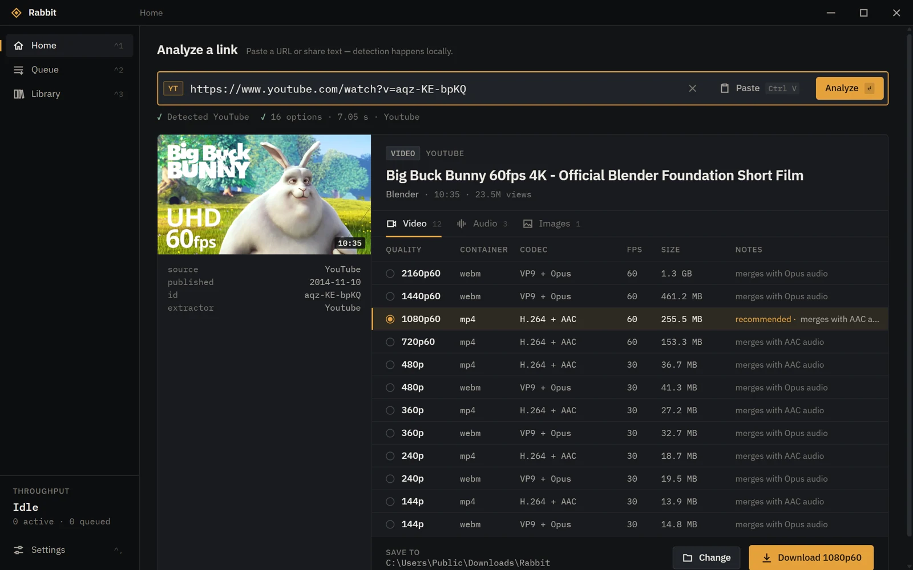
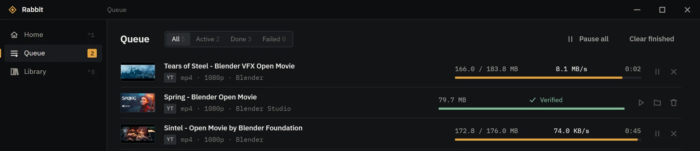
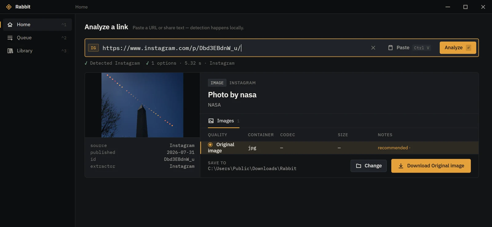

Every option, laid out
Resolution, frame rate, container, codec and size for each format the source offers. Rabbit recommends the one that plays everywhere; you can pick any other.
Free and open source · Windows 10 / 11
Rabbit downloads public videos, audio and images from YouTube, Bilibili, Kuaishou, RedNote, Instagram, Facebook, X, Pinterest and more — in the best quality the source offers — and checks every file it saves.

01 — Features
Resolution, frame rate, container, codec and size for each format the source offers. Rabbit recommends the one that plays everywhere; you can pick any other.
After each download Rabbit inspects the file with FFprobe. If a video comes out smaller than the quality it promised, the task fails instead of quietly saving the wrong thing.
Large files are fetched over parallel connections, back off politely when a server limits them, and resume after a pause, a dropped connection or a restart.
Native readers for Bilibili, Kuaishou, Kwai, RedNote, X, Pinterest and Suno, with yt-dlp as the fallback — so a site change upstream doesn't take everything down.
yt-dlp, FFmpeg and FFprobe ship inside the installer. Merge video and audio, convert to MP3 or save the original image — nothing else to install.
No account, no telemetry, no ads. Links are analysed on your PC. Signed-in sessions for Bilibili HD are opt-in, per site, and never stored.
02 — Platforms
Each status comes from downloading real public samples and checking them with FFprobe. Where a site withholds something from signed-out visitors, Rabbit says so — it doesn't route around it.
| Platform | Video | Audio | Images | Best verified | Status |
|---|---|---|---|---|---|
| YouTube | Videos, Shorts | M4A, Opus, MP3 | Cover | 3840×2160 | Verified |
| Reels, posts | — | Photos, carousels | 1080×1920 | Verified | |
| X / Twitter | Video, GIF | — | Original photos | 1080×1440 | Verified |
| Bilibili | BV / av, parts, b23.tv | M4A, MP3 | Cover | 1920×1080* | Verified |
| RedNote | Video notes | MP3 | Image notes, Live Photos | 720×1280 | Verified |
| Video pins | — | Image and story pins | 720×1280 | Verified | |
| Kwai | Video pages | MP3 | Cover | 720×1280 | Verified |
| Kuaishou | Share and desktop links | MP3 | Cover | 1080×1920 | Partial |
| Reels, videos | — | — | 1080×1920 | Partial | |
| Suno | Song video | Withheld by Suno | Cover | 824×1464 | Partial |
| TikTok, Douyin | Not available from the test location (regional block / signed-in only) | Not tested | |||
* Bilibili gives signed-out visitors up to 480p. 1080p was verified with the optional signed-in session. Other sites go through yt-dlp's generic support with no promise. Full details: platform compatibility.
03 — In use


Screenshots of Rabbit 0.7.0. Shown media: Big Buck Bunny, Sintel, Spring and Tears of Steel by the Blender Foundation (CC BY); photo by NASA.
04 — Download
Each release includes a SHA256SUMS.txt file so you can check the installer before running it.
05 — Numbers
Counted from GitHub's own download numbers for the Windows installer of each published release, refreshed every few hours. A download isn't a person or an install.
06 — FAQ
Yes. Rabbit is open source under the MIT License, with no ads, accounts or paid tiers.
No. There's no telemetry or analytics. Rabbit talks only to the site you're downloading from — and, when you ask it to, GitHub to check for a yt-dlp update. Your library stays on your PC.
No. Rabbit downloads what the site shows a signed-out visitor. It never bypasses DRM, paywalls, captchas or regional blocks. For Bilibili you can opt in to using your own browser session for the qualities your account already has.
Because it isn't code-signed yet. See About the Windows warning above, and check the SHA-256 if you want to be sure the file is the one published here.
Not yet. Rabbit is built with Tauri, so other platforms are possible, but only Windows is built and tested today.
Rabbit itself doesn't update automatically — download new versions from this page. The bundled yt-dlp can be updated from Settings → Tools when you choose to; each update is checked against its SHA-256 first.
Sites change often. Try updating yt-dlp in Settings → Tools, then open an issue with the error Rabbit shows (leave out links to anything private).
Only download what you have the right to. Many sites' terms restrict downloading, and copyright still applies to what you save. Rabbit is a tool; how you use it is up to you.